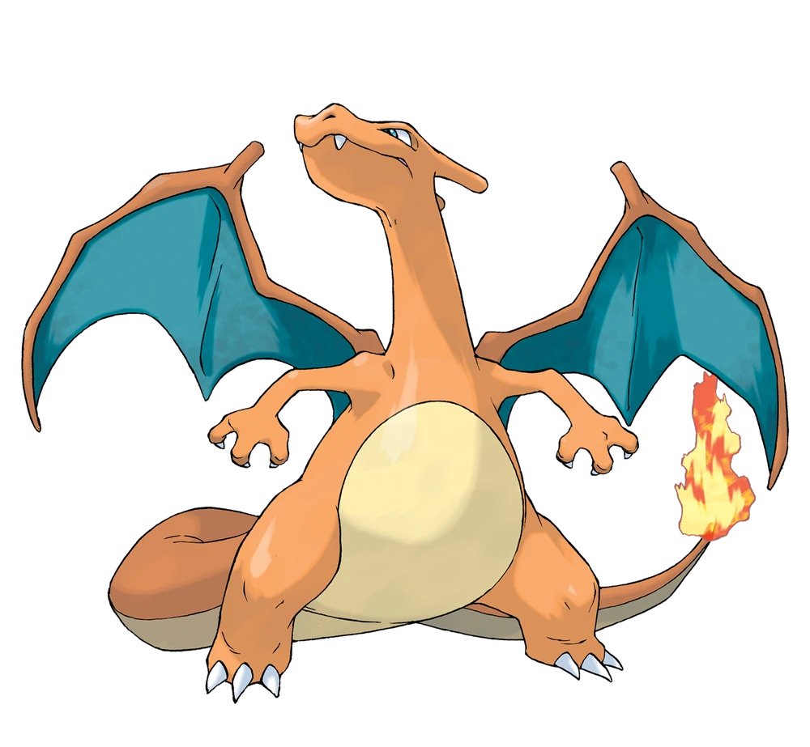
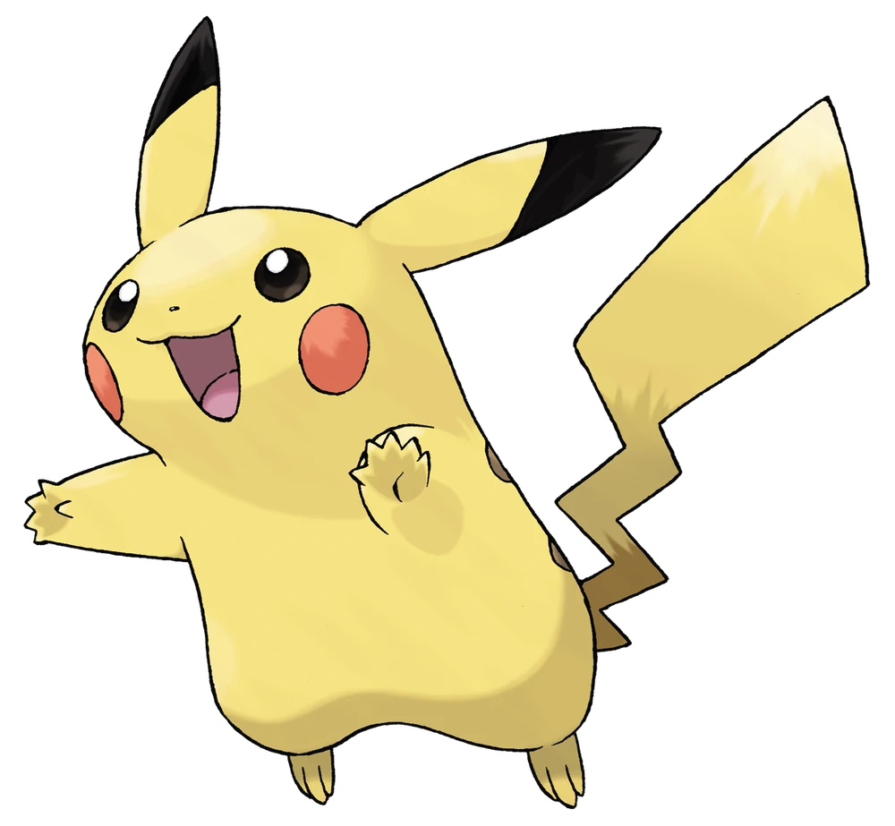
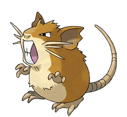
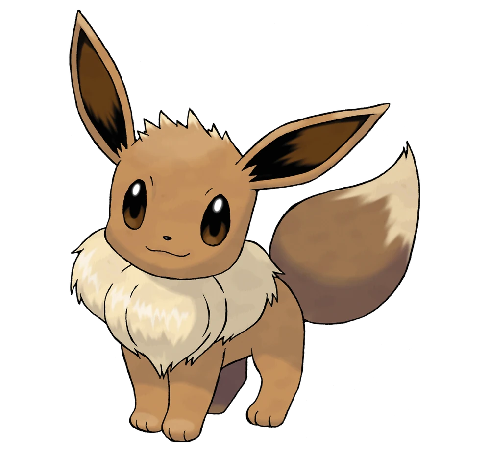

Pokémon es una franquicia mundialmente conocida que comenzó como un videojuego en 1996. Su universo está habitado por criaturas llamadas Pokémon, que los entrenadores capturan, entrenan y enfrentan en batallas. Cada Pokémon tiene habilidades únicas y evoluciona con la experiencia. A lo largo de los años, Pokémon se ha expandido a series animadas, películas, cartas coleccionables y mucho más, convirtiéndose en un fenómeno cultural.